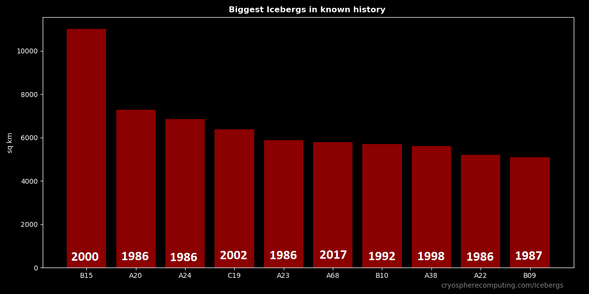
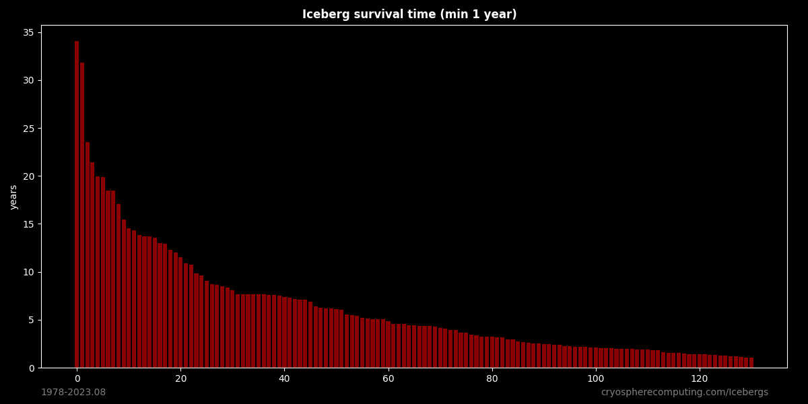
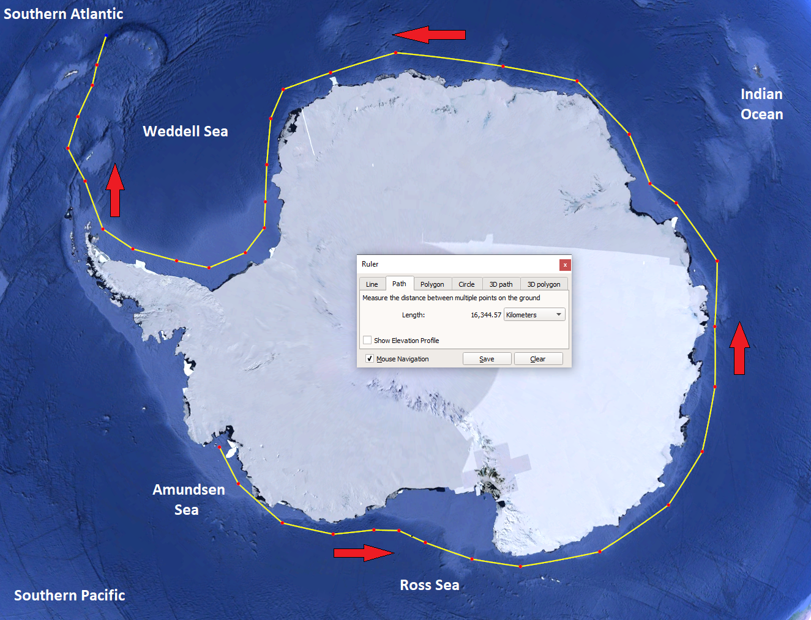
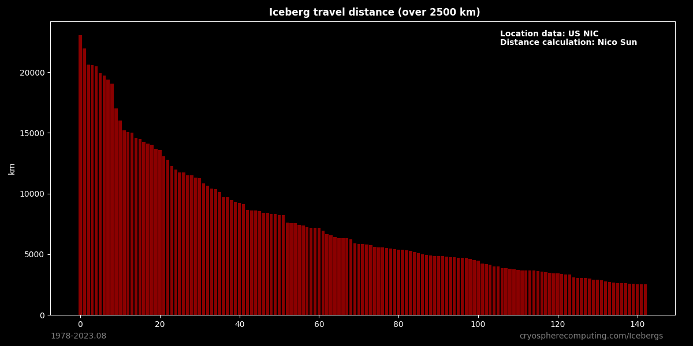
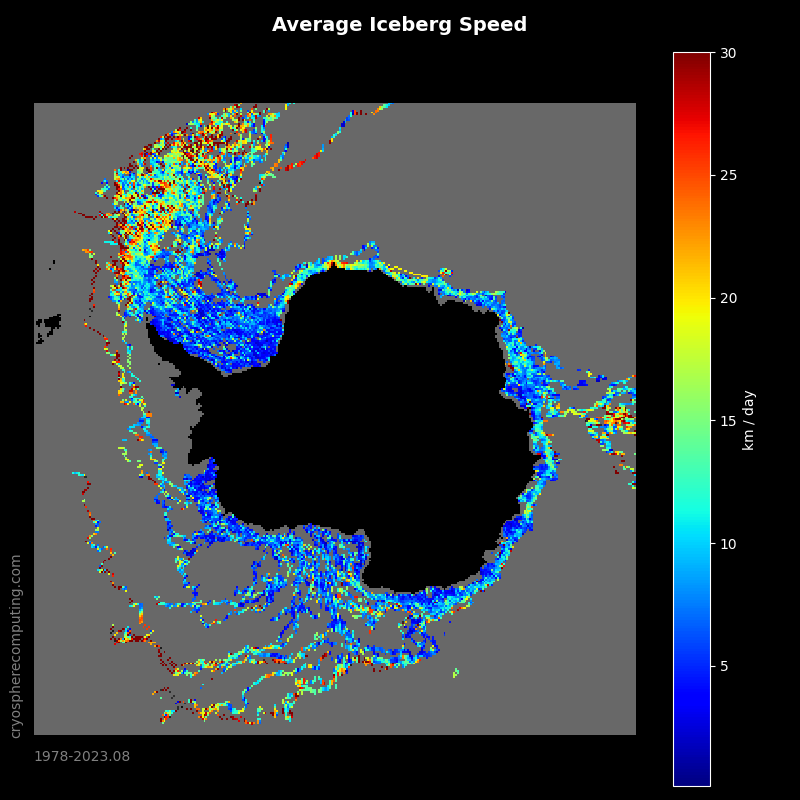
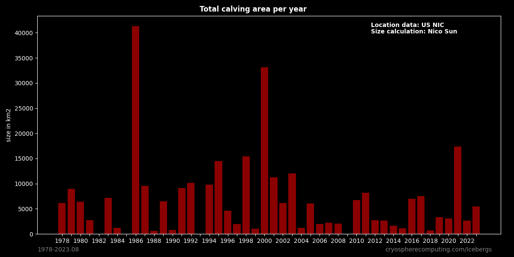
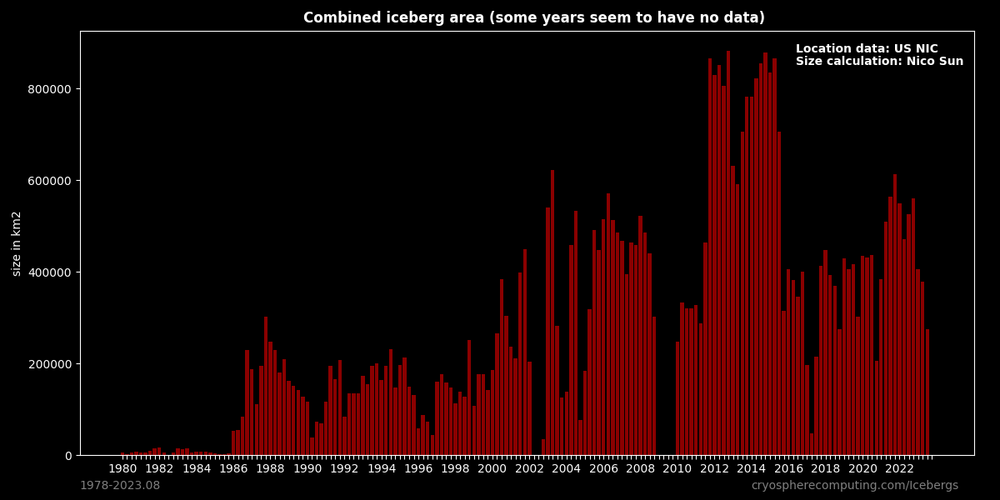
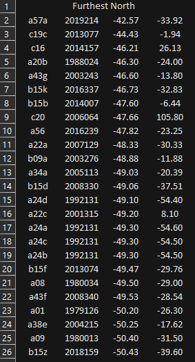

Iceberg Stats
Iceberg Size
All iceberg until 2021 together have an area of 176,667 km2.
The top ten have accurate sizes. The rest are estimates. (length * width * 0.9)
Not every iceberg calves as an exact rectangle. Very large icebergs from big iceshelfs come close, but rounded corners
or sections missing means the real size is smaller. Therfore the size has been reduced by 10%. Usually the real size is
between 80-100% of the perfect calculated rectangle.
Iceberg Age
Iceberg Age from calving to falling below size requirement to be tracked for the last piece. As of August 2023 the oldest Iceberg is B09 with 34.03 years, closely followed by A23 with 31.79 years. While most of B09 has melted out one piece got stuck on it's journey and will survive at least a few more years. A23 never got far and spend all of it's life being grounded in the Weddell Sea. As of mid 2022 it has hardly melted at all, but it recently started floating freely northwards.
In late 2023 A23A has drifted to the edge of the ice edge of the Weddel Sea. It has maybe 2 years left in the "warm" South Atlantic even though it is still as big as before.
Iceberg travel distance
Most Icebergs follow the Antarctic coastal current and either melt out on this path or when they drift into the southern Atlantic. Some icebergs escape from the Ross Sea into the southern Pacific.
This is the longest direct path an iceberg could take. In reality swirls make the journey much longer.
The current record is 23024 km by iceberg "b16". The second place by iceberg "b15k" is 21945 km, but it has already melted out.
Iceberg speed
Calving size per year
Total combined Iceberg Area (90 day periods)
Furthest North
The is a list of the most northern position achieved by icebergs. It isn't the location of melting out, but often very close. The date is in the YYYYDDD format. e.g. 2020111 is Year 2020, Day 111
Data used
The Antarctic Iceberg Tracking Database; https://www.scp.byu.edu/data/iceberg/